Mais que uma igreja. Uma família.
Você não está
sozinho.
Você importa. Sua vida tem valor. Existe esperança. Escolha abaixo como podemos estar com você hoje.
Vidas sendo moldadas por um propósito maior.
“Mas agora, Senhor, tu és o nosso Pai; nós somos o barro, e tu o nosso oleiro; todos nós somos obra das tuas mãos.” — Isaías 64:8